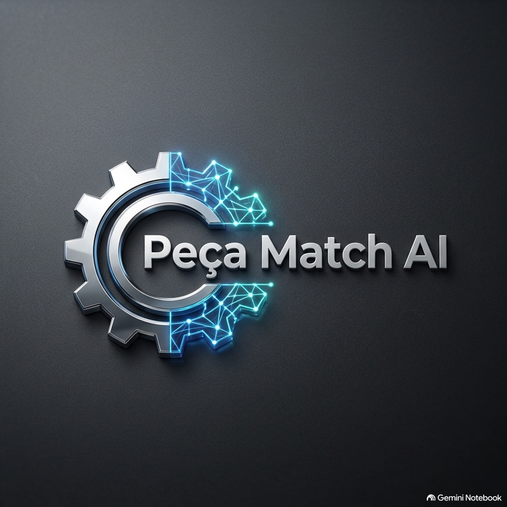

Empreendedor
Especialista em criar e escalar soluções corporativas (B2B) impulsionadas por Inteligência Artificial. Transformo problemas operacionais complexos em produtos eficientes e inovadores.
Conhecer ProjetosCom forte perfil empreendedor, foco em identificar gargalos operacionais e criar soluções tecnológicas que gerem valor imediato. Acredito na Inteligência Artificial não apenas como inovação teórica, mas como uma ferramenta prática para transformar e escalar negócios reais.
Minha trajetória é marcada pelo desenvolvimento e validação de produtos B2B. Atuo na liderança estratégica e na concepção de plataformas, conectando a visão de mercado à tecnologia de ponta para automatizar, prever e resolver processos altamente complexos da indústria.
Implementação de IA aplicada ao mundo real para automatizar tarefas e gerar predições precisas.
Da identificação da dor do mercado até a validação e escalabilidade de soluções tecnológicas eficientes.
Reestruturação de fluxos operacionais, reduzindo erros corporativos e mitigando custos.

Plataforma em funcionamento
Uma plataforma que utiliza IA para entregar assertividade na busca por componentes de veículos pesados. Otimização de tempo, redução de custos e inovação no mercado automotivo.
Forte atuação corporativa liderando e estruturando Centros de Excelência (CoE) em Automação Robótica de Processos (RPA) para gigantes do mercado, como Boa Vista e Wipro Limited.
Sólida trajetória atuando desde a consultoria e arquitetura de soluções até a coordenação de projetos envolvendo plataformas BPM e ECM (Fluig).